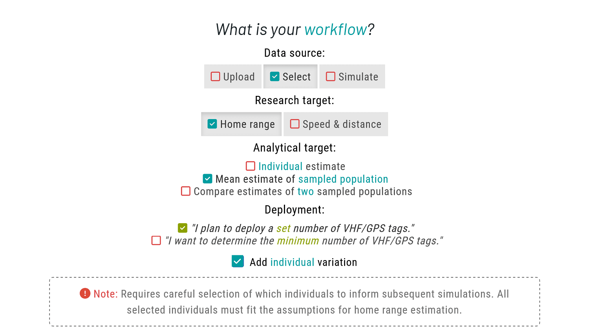
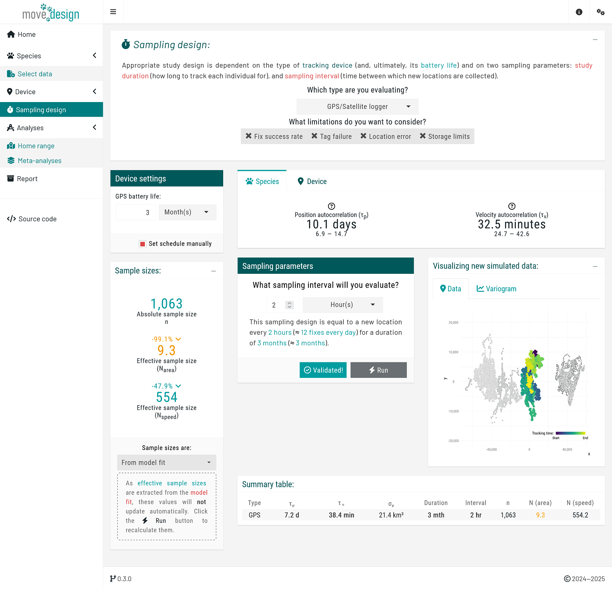
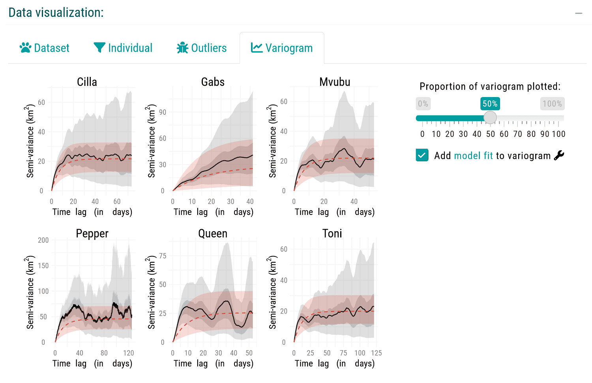
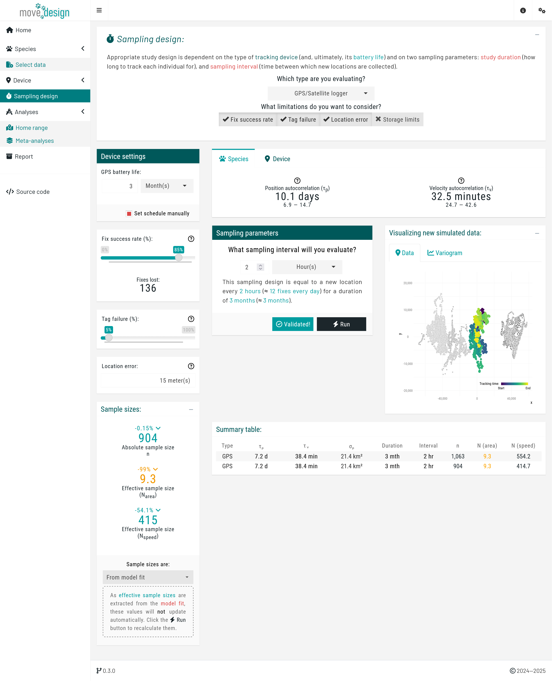
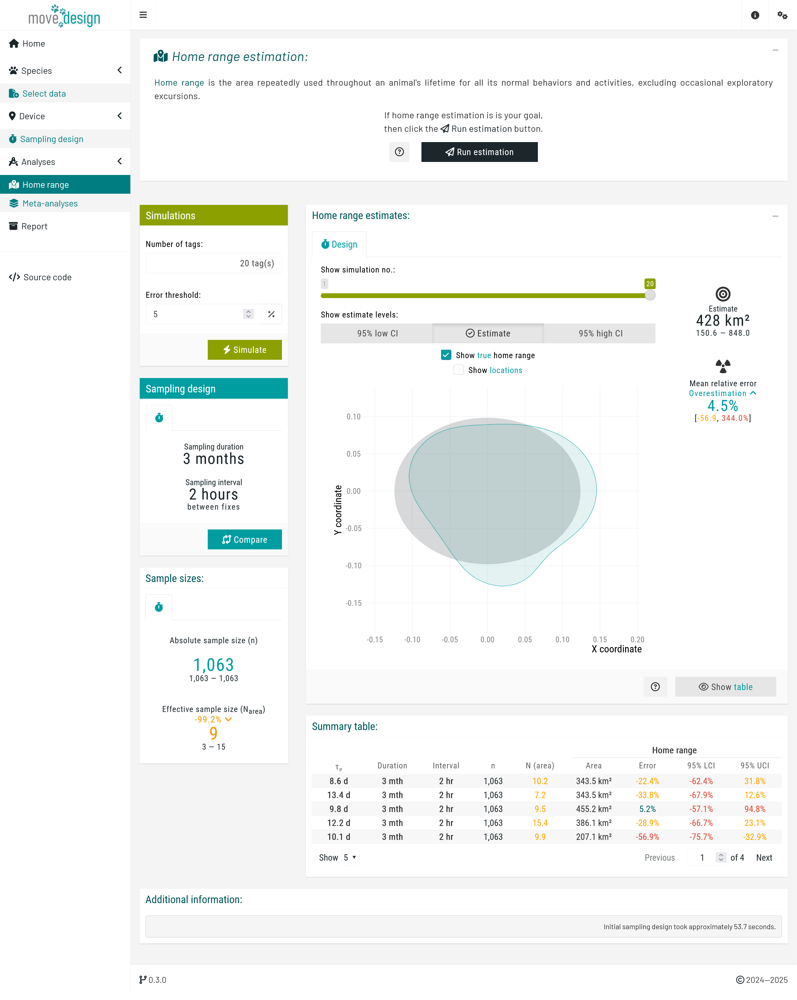
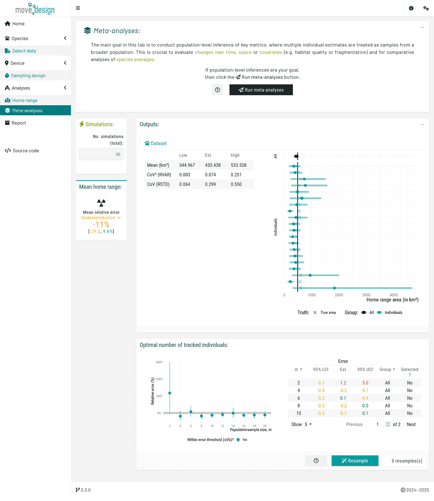
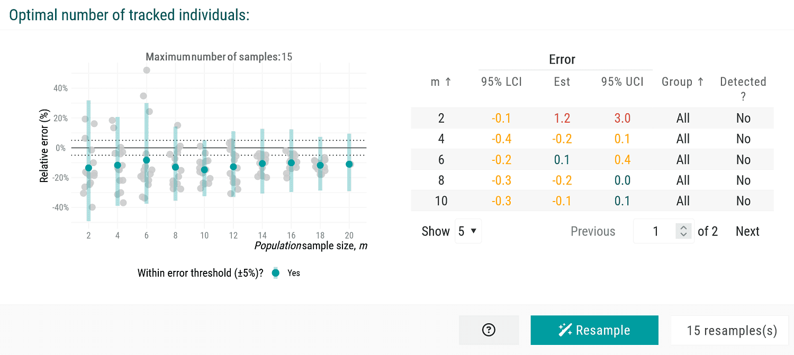
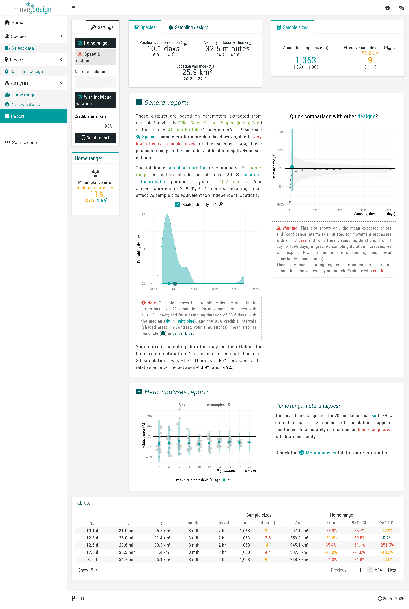

Overview
Walkthrough
This workflow is in Silva et al. (in prep), and is a simplified case study, designed for quick execution. We will use a GPS tracking dataset of African buffalos (Syncerus caffer) tracked in Kruger National Park between 2005 and 2006 (Cross et al., 2009), to inform our simulations. Our primary goal is to reliably estimate mean home range area of a population of African Buffalos. Please see the manuscript for a more detailed workflow, incorporating both research targets.
 Similarly to the single estimate vignette, we begin by selecting the appropriate workflow in the Home tab. Please check that vignette first, as some information is omitted here to avoid repetition. In this tutorial, we will showcase a workflow for deploying a set number of units.
Please choose Select as your data source to choose from a list of available species. Then, set Home range as your research target. For the analytical target, choose Mean estimate of sampled population. A new option will show up for deployment; please select the "I plan to deploy a set number of VHF/GPS tags." In addition, tick the Add individual variation checkbox. This allows us to account for individual differences, rather than assuming all individuals behave identically.
Data
Differently from the single estimate workflow, we are now able to select multiple individuals, which enable us to extract population-level species parameters.
First, select the African Buffalo (Syncerus caffer) as your study species. From the dropdown menu, select all six individuals and click the 'Validate' button. Once validation is successful, the button should now read 'Validated!'.

Before proceeding further, you should visually inspect the variograms to confirm range-residency through the Variogram tab of the Data Visualization box. Variograms allow users to check if semivariance reaches an asymptote, and facilitate a cursory confirmation of range residency (Calabrese et al., 2016; Silva et al., 2022). Downstream results may be unreliable if we violate the range residency assumption as, from this point onward, the movedesign application will operate under the assumption that the data originates from a range-resident species.

For this tutorial, we will proceed with all six individuals. In a real workflow, however, we would likely exclude Gabs and proceed with the remaining individuals.
Proceed by clicking the 'Extract' button. Upon successful extraction, the Displaying parameters box presents our extracted species parameters: the position autocorrelation () and the velocity autocorrelation timescale (). For the African buffalos, the mean is 10.1 days (95% CI: 6.9, 14.7), and a mean is 32.5 minutes (95% CI: 24.9, 42.6). These parameters serve as the foundation for all subsequent simulations as we evaluate study design.
Sampling design
Next, we navigate to the 'Sampling design' tab, where we input our sampling parameters. For this tutorial, we will consider the following sampling schedule: a sampling duration of 3 months, with 12 new locations collected per day (sampling interval of 2 hours). To set this particular schedule, we ensure that GPS/Satellite logger is selected in the first dropdown menu, and untick the Select from plot checkbox in the Device settings box before proceeding, which will prompt us to manually input the sampling interval. Then, we set GPS battery life (equivalent to the maximum sampling duration) to 3 months and What sampling interval will you evaluate? to 2 hours.
We incorporate three additional components: fix success rate (here expected to be, on average, 85%), reflecting the reliability of the GPS signal; tag failure (5% chance of a tag failing during data collection); and location error (averaging 15 meters). Please Enable all three settings. At this point, we click the Validate button (verifying once again that it switches to Validated!) and, afterwards, the Run button.

Once a message appears confirming that this step has been successfully completed, we proceed to the Home range tab below Analyses.
Analyses
Home range estimation
To start the estimation process, we click the Run estimation button located in the top box. We can now see the outputs for a single simulation, providing a starting point. The relative error in home range area is an overestimation of 4.5% (95% CI: -56.9, 344%). Note that due to the randomized nature of seed generation and the inclusion of individual variation, values may differ substantially across runs.
 We can view the outputs for each simulation using the Show simulation no.: slider. Most importantly, in the Simulations box (top right corner), we set the total number of tags and the error threshold. We set the error threshold for our estimates at ±5%, and the total number of tags to 20 individuals, before clicking the Simulate button. A message then appears, indicating the expected runtime; we must wait for this process to complete before we can explore all the outputs.
Meta-analyses
Next, in the Meta-analyses tab, we click the Run meta-analyses button to obtain information on population-level inferences. Once completed, a new box on the left indicates that, on average, the population-level home range area is underestimated by -11% (-29.2, 9.6%). In addition, two plots are generated: first with the individual estimates of home range areas, and then the population-level estimates of home range areas.

The first plot illustrates the relative error in individual-level home range area estimates by displaying the estimated home range area (x-axis, in km²) for each individual (y-axis), along with the associated 95% confidence intervals. The black square represents the population-level estimate (mean across all individuals) with its corresponding 95% confidence interval. The vertical solid line indicate the expected true value for the inputted species parameters.
The second plot illustrates how an increasing number of individuals (from a population sample size of 2 to a maximum of 20) affects our population-level mean estimates. Each point represents the mean relative error (%) of this metric and its associated 95% confidence intervals, plotted against the number of tracked individuals. The dashed horizontal lines indicate a predefined error threshold of ±5%. An accompanying table provides detailed numerical values, as well as whether a sub-population was detected at each population sample size.
To verify these outputs, we can resample through combination testing to assess the spread of estimates, randomly reassigning individuals into new sets and rerunning the estimation of population-level mean estimates multiple times.

This step helps evaluate how individual estimates contribute to the variation of the observed mean estimate. We set the number of resamples to 15 here, though higher values are recommended for larger population samples. After clicking the Resample button, the new plot illustrates how different sets of individuals shape the observed mean estimate across increasing population sample sizes. Variation remains high, indicating that additional simulations may be needed to stabilize the mean home range estimate.
Report
Finally, in the Report tab, clicking Build report generates a comprehensive summary of our sampling schedule outputs. This report consolidates key findings, highlighting how our current sampling effort affects estimation accuracy. Specifically, it reveals that a population sample size of 20 individuals fails to meet the ±5% error threshold for mean home range area, suggesting insufficient data to achieve reliable estimates. Although the confidence intervals overlap with the error margins, the observed individual variation may still lead to inaccurate conclusions. The report provides a clear visual representation of these uncertainties, allowing us to assess whether adjustments to the sampling schedule are necessary.
